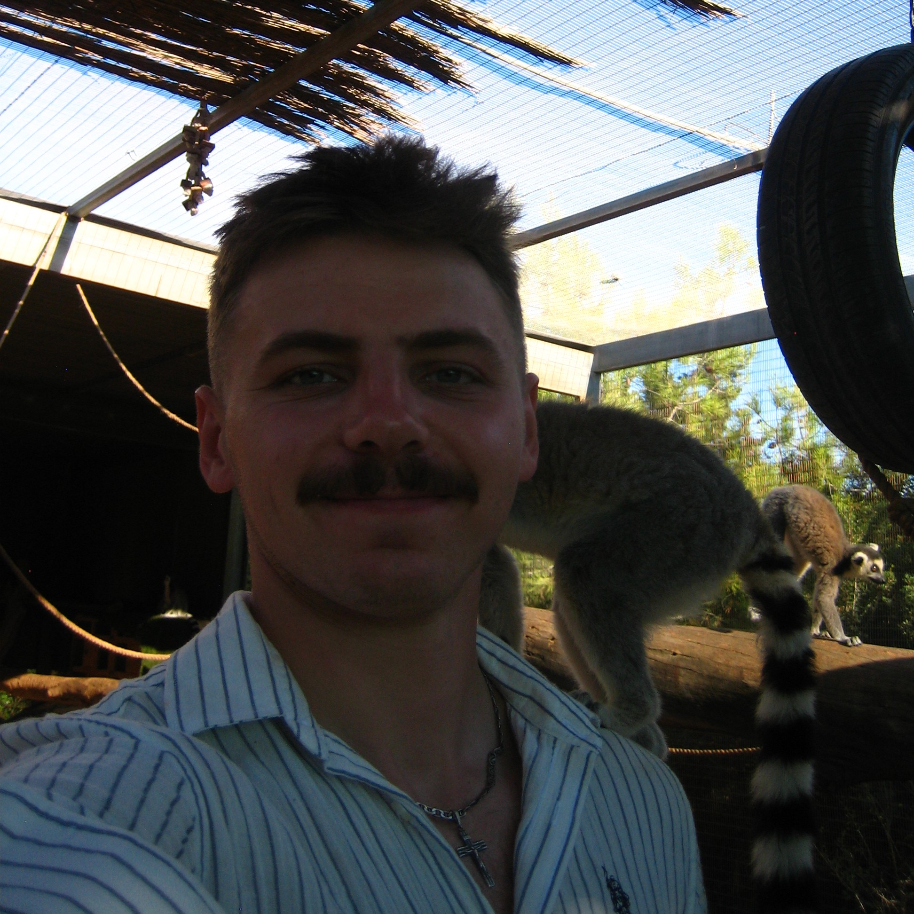
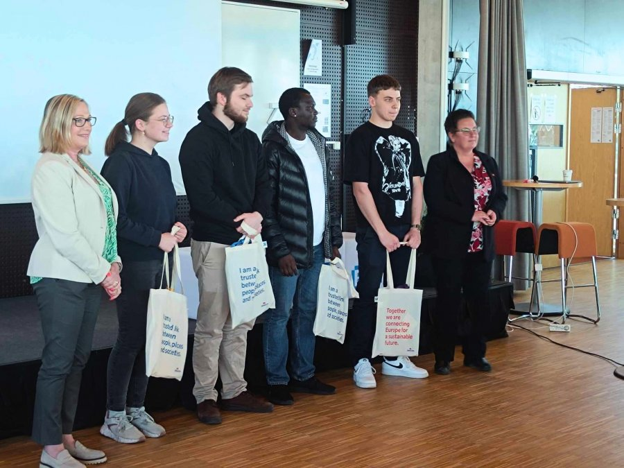

O mnie

Kim jestem?
Nazywam się Nikodem. Skończyłem Techinkum Ekonomiczne. Wcześniej studiowałem zarządzanie ze specjalizacją inwestycje i nieruchomości, ale zmieniłem kierunek. Od października 2026 studiuję informatykę (studia inżynierskie, zaocznie) w PJATK w Gdańsku. Równolegle pracuję na lotnisku w Gdańsku: przy obsłudze płyty lotniska i w wypożyczalni samochodów. Moim celem jest zostać inżynierem oprogramowania w obszarze kompilatorów, systemów i narzędzi dla AI, programując głównie w C i C++. Docelowo chcę pracować w dużej firmie, najlepiej międzynarodowej, a po pracy rozwijać własne projekty: roboty, elektronikę i programy.
Zainteresowania
Siłownia
Regularne treningi uczą mnie systematyczności i cierpliwości, dają energię i pomagają odreagować, co bardzo się przydaje, gdy łączę pracę na lotnisku ze studiami zaocznymi.
Podróże
Poznawanie nowych miejsc i kultur uczy mnie odnajdywać się w nieznanych sytuacjach i ćwiczyć angielski w prawdziwych rozmowach, a to dobre przygotowanie do pracy w międzynarodowej firmie.
Eksperymentalna inżynieria
Lubię tworzyć niekonwencjonalne projekty badawcze. Biorę się za pomysły, których nikt mi nie zadał, bo nawet nieudany eksperyment z elektroniką czy kodem pokazuje mi, jak rzeczy działają od środka, i rozwija moje zainteresowanie kompilatorami, robotyką i AI.
Zainteresowania technologiczne
Embedded
Programowanie mikrokontrolerów, czyli kod, który steruje sprzętem.
C#
W C# napisałem projekt FunctionLab.
Robotyka
Połączenie programowania, elektroniki i mechaniki.
Moje osiągnięcia

Hackathon Stena Line Propeller Prize
W kwietniu 2024 roku w szwedzkiej Karlskronie razem z zespołem przez 24 godziny pracowaliśmy nad ekologicznym rozwiązaniem dla żeglugi promowej. Nasz projekt SilentSea dotyczył ograniczenia hałasu w wodach Bałtyku, poprzez wykorzystanie odwróconej technologii ANC. SilentSea był jednym z dwóch nagrodzonych projektów pierwszej edycji konkursu.
Nauczyłem się pracować pod presją czasu w zespole ludzi z różnych kierunków, szybko wchodzić w zupełnie nowy temat i przedstawiać pomysł tak, żeby było jasne, jaki problem rozwiązuje.
Link do artykułu